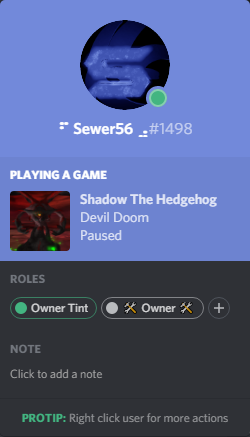

Libraries, Tools & Software
This page lists the various original released general purpose libraries & tools I've created, i.e. projects where I am the main author. Many of these libraries I actively still maintain.
Info
Any game related library/tool will be listed under the Games section.
Items are shown in roughly chronological order.
Nexus Mods (.nx) Archive Format
About
- Summary: High Performance Archive Format; bottlenecked by RAM.
- Release Date: 2023, Source
- Semi-SOLID archive format based on chunked ZStandard files.
- Archive sizes halfway between
.zipand.7zultra; with >10GB/s extraction speed that bottlenecks any NVMe. - Open source, under GPLv3.
- Written at work/on company hours.
Structured Binary Diff Library
About
- Summary: Creates diffs of binary data with known structure.
- Release Date: 2022, Source
- Uses SIMD Intrinsics, achieving ~16GB/s single thread on my 2014 i7-4790k machine.
- Used to merge e.g. Item placement layouts in games, arrays of item parameters, etc.
- Learn More
Controller Support for WPF
Sewer56.UI.Controller
- Summary: Adds controller support for XInput & DInput controllers to WPF applications.
- Release Date: 2022, Source
- Zero Allocation.
Reloaded-II operated using an Xbox Controller.
Update: A Self-Update Library
Sewer56.Update
- Summary: Lightweight library that adds update support to your applications.
- Release Date: 2021, Source
- Can be used for more than just main application, e.g. plugins.
- Supports delta compression using Delta Patch Generator under the hood.
- Supports full Semantic Versioning.
- Can clean up unused files from application folder after updates.
Example: Reloaded-II update shipped using delta compression.
Delta Patch Generator
Sewer56.DeltaPatchGenerator
- Summary: Creates patches that transform one version of a folder into another version, with delta compression.
- Release Date: 2021, Source
- Uses optimised port of VCDiff as base algorithm, with my own performance improvements.
- Only data that has changed within the files is stored, and any new files.
- This means download sizes are very small!
Dolphin Image Optimizer
DolphinImageOptimizer
- Summary: Batch converter of textures to use with Dolphin Emulator (or any PC Games).
- Release Date: 2021, Source
- Automatically converts a source folder of PNG textures to GPU optimised DDS files.
- Can create dummy textures for fully transparent textures.
- Automatically scales images based on target resolution e.g. 1440p, 4K.
- This way you can make multiple 'versions' of your texture packs.
- The resulting output uses less RAM, space and downloads faster.
DolphinImageOptimizer 1.0.0
Created by Sewer56, licensed under GNU LGPL V3
--source Required. The folder to optimize.
--target Required. (Default: P960) Target resolution to optimize
image size to. Set to first option greater than desired
screen resolution. Valid values: P960, P1920, P3840
--optimization (Default: Medium) PNG Optimization Level. Use Maximum if
releasing as PNG, Medium for testing. This is auto set to
Minimal when Publishing as DDS. Valid values: Maximum,
Medium, Minimum
--publish (Default: None) Converts textures to DDS and deletes
original. Recommended BC7 for Dolphin. DXTAuto uses
DXT1 when no transparency, DXT5 when transparency.
If you know better, use PublishAdvanced instead.
Valid values: None, DXT1, DXT5, DXTAuto, R8G8B8A8, BC7
--publishadvanced Custom format to pass to TexConv. e.g. BC5_UNORM
BitStream
Sewer56.BitStream
- Summary: Fastest .NET Bitstream Library, Zero Allocation, No Virtual Function Calls
- Release Date: 2021, Source
Number Utilities
Sewer56.NumberUtilities
- Summary: Low level math extensions. e.g. Generic math, zero overhead lossy number compression etc.
- Release Date: 2020, Source
- Partially superseded by newer .NET Runtime features (e.g. Static Abstracts in Interfaces)
Controller Input Library
Reloaded.Input
- Summary: Library for managing USB game controllers that wraps around DInput and XInput.
- Release Date: 2020, Source
- Supports Remapping, Hotplugging, Configurator and many other essential features.
- Zero allocation.
Screenshot of default configurator application (embeddable in your program) with sample controller bindings.
Dear ImGui .NET Bindings
About
- Summary: .NET Binding for Dear ImGui, w/ features not present in other bindings.
- Release Date: 2020, Source
- Exposes
InternalImGui API omitted from other wrappers. - As well as Win32, D3D9/11/12, OGL2/3, GLFW, SDL2 & Vulkan backends other bindings lack.
- Operates with minimal code changes/fixes, low maintenance library.
DearImGuiSharp used my modification of a commercial game [Sonic Riders].
.NET Core Install Checker
NetCoreInstallChecker
- Summary: Library to detect missing .NET (core) installations & (optionally) installs the runtime.
- Release Date: 2020, Source
// runtimeConfigPath: Path to runtimeconfig.json
var finder = new FrameworkFinder(is64Bit);
var resolver = new DependencyResolver(finder);
var result = resolver.Resolve(RuntimeOptions.FromFile(runtimeConfigPath));
// Check if dependencies are missing.
if (!result.Available)
{
// Do something with missing dependencies.
// For example:
foreach (var dependency in result.MissingDependencies)
{
var downloader = new FrameworkDownloader(dependency.NuGetVersion, dependency.FrameworkName);
Console.WriteLine($"Framework {dependency.Name} required to run this application is missing.");
Console.WriteLine($"You can download it using the following URL {await downloader.GetDownloadUrlAsync(Architecture.x86)}");
}
}
Dolphin Emulator Memory Access
Dolphin.Memory.Access
- Summary: Access Dolphin Emulator's Emulated Memory from C# code.
- Release Date: 2019, Source

Can be used to e.g. show state of Dolphin Emulator's currently played application.
.NET Runtime Bootstrapper
Reloaded.Core.Bootstrap
- Summary: Library to easily load .NET Runtime (CoreCLR) into native process.
- Release Date: 2019, Source
- Created when runtime hosting became first available in .NET Core 3 Preview 6.
Network Messaging Library
Reloaded.Messaging
- Summary: Near zero overhead library for packing, unpacking and handling messages sent over network.
- Release Date: 2019, Source
- Throughput of 10+ Million messages per second (unpack + pack) on a 2014 4790k based machine.
- Provides integration for popular serializers, such as
MessagePack&System.Text.Json. - Optimised down to assembly/JIT level. Allocation free.
Among other uses, this library is used in Reloaded-II to communicate with mod loader and perform actions like loading and unloading game modifications at runtime.
WPF Theme
About
- Summary: Custom WPF theme/style, for Reloaded-II.
- Release Date: 2019, Source
Includes styles for almost every control in WPF and fits in under 500kB, including space taken by custom font. Supports extra theming, animated window borders, custom controls, animations and more.
Reloaded Core Libraries
About
- Summary: Set of low level, high performance libraries for manipulating applications.
- Release Date: 2019+, Source
- Actively maintained. Supports all latest .NET features including Assembly Trimming etc.
- Originally created for Reloaded-II.

Reloaded.Memory
- Summary: General purpose low level high performance memory and IO manipulation library.
- Example Features:
- Abstractions over memory & pointers, e.g. Convert pointers to refs, use LINQ over unmanaged memory.
- High performance streams for reading binary files, >10x read perf over .NET 5
FileStream. - Memory utilities, e.g. Circular Buffers, Generic Read Extensions for Streams, Fixed Endian Stream Readers etc.
Reloaded.Memory.Buffers
- Summary: Efficiently allocate memory shared between different external applications that lasts lifetime of the current process.
- Note: Basically for allocating memory to be used by Reloaded.Hooks for the native code it generates.
Reloaded.Injector
- Summary: A DLL Injection library that supports injecting DLLs into a 32-bit process from a 64-bit process.
- Eliminates the need for 2 separate 'injector' programs and, has some nice features like calling native functions in other processes with parameters too.
Reloaded.Assembler
- Summary: Wrapper over Flat Assembler for .NET. Zero allocation.
- When making this library, I contributed towards getting FASM [written in assembler] to work on Windows x64.
- First open source assembler solution for .NET that supported x64.
Reloaded.Hooks
- Summary: The most advanced .NET hooking library. Alternative to libraries like MS Detours, and Minhook.
- Supports infinite stacking of hooks, patching other hooks, etc.
- Supports custom calling conventions e.g. Function params. in custom registers. Only library to do so at release.
- Extremely high compatibility. At time of writing was only library that could hook Direct3D9's
EndScenewith Steam Overlay without Steam specific hacks.
Reloaded.Memory.Sigscan
- Summary: High performance SIMD based scanner for byte patterns, with support for masking.
- Fastest .NET library at time of writing.
- Hits over 300GB/s on Ryzen 5000 systems, limited by RAM speeds.
- Mainly used in Malware analysis/scanning (AV Software) and game hacking.
libReloaded
About
- Summary: Set of low level libraries for manipulating processes [modifying games].
- Release Date: 2018, Source.
- Status: Rewritten and in favour of above listed core libraries.
XOS Image Compressor
About
- Summary: Bash script for efficient batch compression of images.
- Release Date: 2016, 2017, Source Code.
Live Text Dumper: YouTube Like it's 2009
About
- Summary: Record YouTube tutorials without a microphone.
- Release Date: 2017, Source Code.
A simple .NET program that allows you to write text to a text file in the background as if typing to a text editor. Combine with a video recorder like OBS and you can make tutorials without a microphone.
HalogenOS: Art
About
- Summary: Artwork for HalogenOS (XOS), a custom Android ROM/Distribution.
- Release Date: 2016, Source
- My work included logo, phone wallpapers, forum banners, announcement images, boot logo, charging logo, OS theme and more.
OxySlim
About
- Summary: Custom OxygenOS based Android ROM for the OnePlus 2.
- Release Date: 2015, XDA Forums

Notable for being the first stock-based ROM to bring working theme(s) to OxygenOS, and removing OnePlus' Excessive Telemetry (Spying), which I originally shared some details about here.
Gin2JellyBean Extended
About
- Summary: A Custom Android ROM for the Xperia Play based on 2.3.7 stock firmware.
- Release Date: 2012, XDA Forums
A enhanced version of another popular custom ROM on the Xperia Play. Notably this one brought another set of popular enhancements such as skipping tracks by holding volume key, a centred clock and the AC!D Audio Engine pre-baked. Was the first stock-based Multiboot Supported ROM.
Additional enhancements were available through extra downloadable zips for customisation.